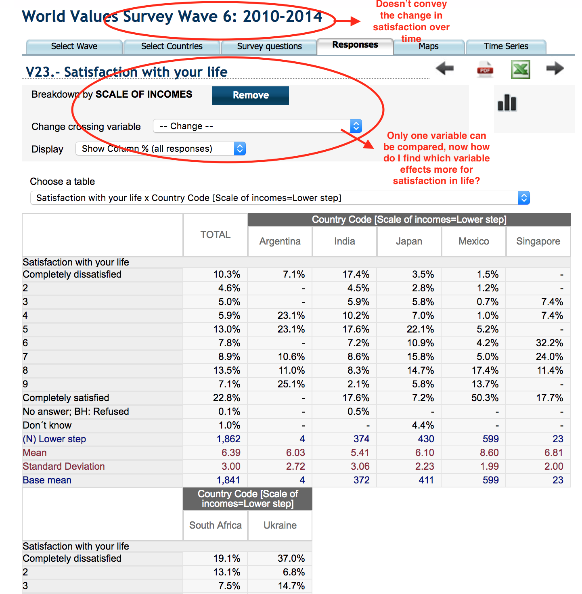
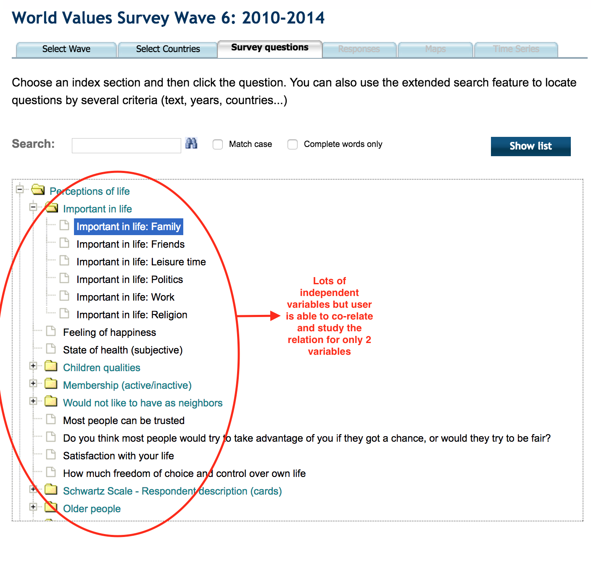
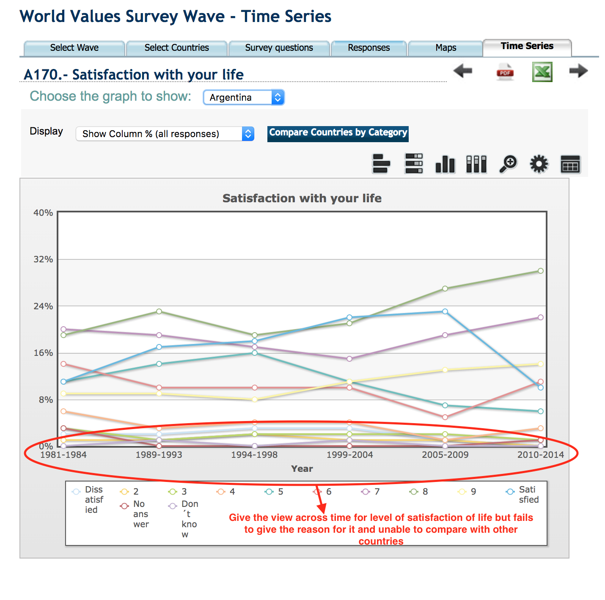
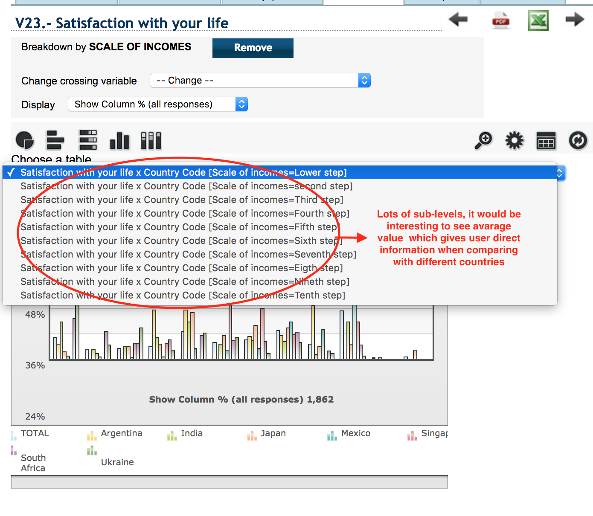
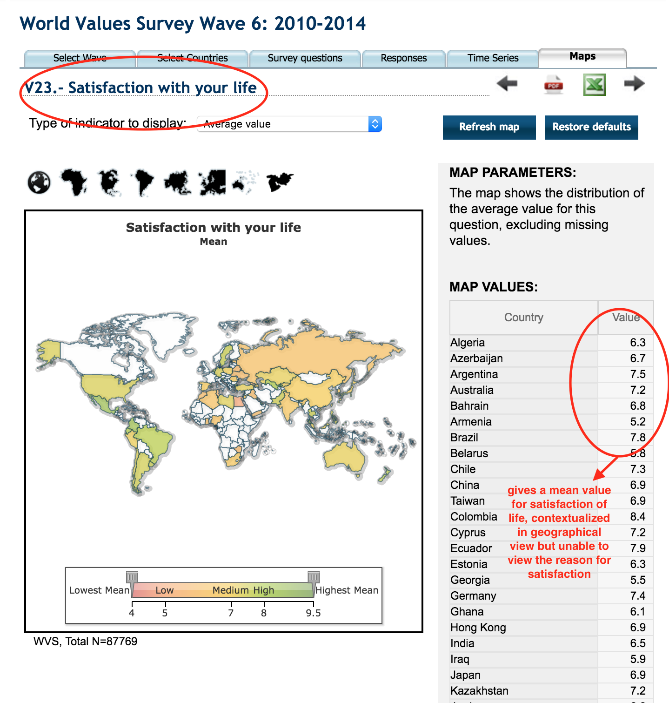

WSV Analytical Trial - Deepika Dipesh
Reserach Question:
How much does people from different parts of the world are satisfied with their life and how does their income, number of their children and their country contribute to it? This will help the user to know the secret of healthy life in each country
Analysis Feedback about WVS's online analysis tool:
1. Only 2 variables are able to cross and over single period
  2. Lots of sub-levels
3. Unable to know the reason for satisfaction in geographical view
Thus the better visualization for above research question is give an overview of all co-related variables for satisfaction of life over time and add some filtering effect to give the detailed answer to the question or user must able to compare the variables or countries.